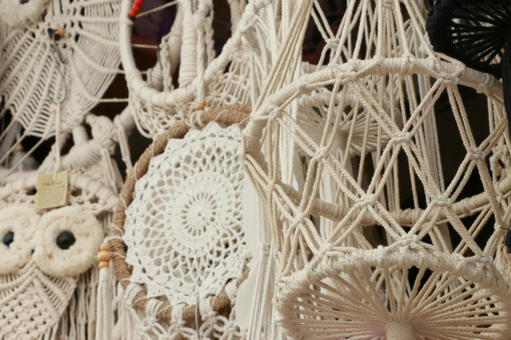

Tecido à mão na floresta
A Arte de Tecer
A Arte de Tecer
Histórias em Nós
Cada fibra é uma escolha, cada nó um compromisso com o tempo. Descubra a beleza orgânica do macramé escultural.


O Processo
O Tempo como Ferramenta
01
Curadoria de Matéria-Prima
Selecionamos apenas algodão orgânico e fibras vegetais de fornecedores locais que respeitam a floresta.
02
O Estudo do Design
Cada peça nasce de croquis manuais que buscam o equilíbrio entre a gravidade e a tensão dos fios.
03
A Execução Paciente
Nó após nó, a peça ganha corpo em um processo meditativo que pode durar de dias a semanas.